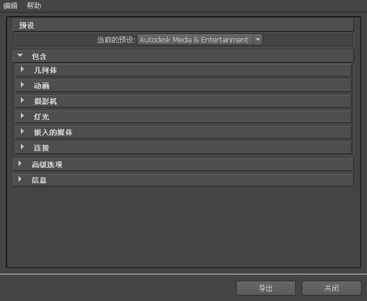

注：
FBX 不支持导出每个 Maya 属性，例如 SmoothDrawType 属性。如果 FBX 插件在导出时遇到一个不支持的属性，它会在重新导入时将该属性重置为其默认值。
要导出 Maya 场景，请执行以下操作：
- 启动 Maya。
- 选择“文件”(File)>“导出全部”(Export All)，或“文件”(File)>“导出当前选择”(Export Selection)。将显示“导出全部”(Export All)或“导出当前选择”(Export Selection)对话框。
- 从“文件类型”(File of Type)菜单中选择 FBX。
注：
如果“文件类型”(File of Type)菜单中未显示 FBX 文件扩展名，请在 Maya 的“插件管理器”中激活 fbxmaya.mll。
- 输入要导出的 FBX 文件的名称。
- “FBX 导出”(FBX Export)选项将显示在 Maya“导出”(Export)对话框的右侧。
- 设置要使用的导出选项或在“预设”(Presets)菜单中选择一个预设。“Autodesk Media & Entertainment”预设包含适用于一般动画工作流的最佳平衡选项。“Autodesk MotionBuilder”预设包含为使用 Maya 和 MotionBuilder 来实现角色动画而设置的选项。
有关预设的详细信息，请参见 FBX 导入选项主题中的“导入预设选项”。
-
重要： 如果您的文件包含纹理和贴图，则务必要激活“嵌入媒体”(Embed Media)选项。嵌入媒体会将媒体存储在 FBX 文件中，这会影响文件大小。仅在将 FBX 文件传输到接收者再也无法访问其中的原始媒体源的位置时使用此选项。
-
如果禁用“嵌入的媒体”(Embed Media)选项，FBX 插件将在导出时存储关联媒体文件的相对和绝对路径。如果因故无法再访问路径，那么将导致出现问题。请确保可以访问关联的媒体，以确保能正确导入这些媒体文件。
- 如果在不激活“嵌入媒体”(Embed Media)的情况下将文件导出为 FBX，则只要在同一台计算机上打开该文件，且场景中使用的所有图像的存储位置与导出该文件时这些图像所在的位置相同，就不会出现问题。这就是为什么最好在向其他人提供 FBX 文件时或存储资源时嵌入媒体，因为您最后可能会删除参考图像，或将所有文件移动到另一个驱动器或不同路径的计算机中。
- 如果在 FBX 2010 版及更早版本中将文件导出为 ASCII 格式，则不会嵌入任何纹理。
-
- 单击 Maya“导出”(Export)对话框中的“导出”(Export)。
- 如果导出过程中出现转化或错误，则警告管理器会在导出过程结束时报告这些问题。有关“警告管理器”(Warning Manager)的详细信息，请参见 FBX 导入选项主题中的“显示/隐藏警告管理器”(Show/Hide Warning Manager)。
注：
“错误”和“警告”之间存在差别。当出现异常情况时，插件会报告错误。如果插件报告错误，则表示错误的后果未知。当插件对源数据应用转化以使其转化为目标应用程序可以读取的格式时，将会出现警告提醒用户。
FBX 导出器会重采样具有长切线的动画曲线，以避免出现重叠导致的潜在冲突。如果您不希望在导出时将动画烘焙到曲线，请在曲线图编辑器(Graph Editor)中手动调整拉长的切线。（“长切线”是在上一个关键帧之前或下一个关键帧之后延伸的切线。）
注： 要取消导出过程，请按 ESC 键。